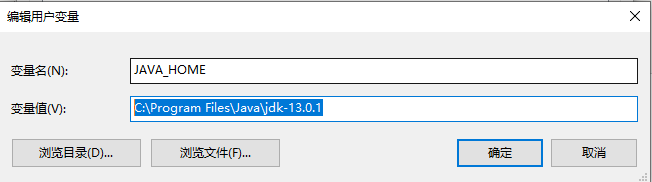
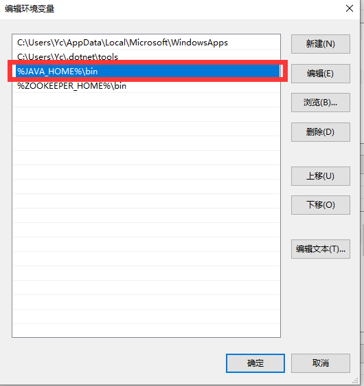
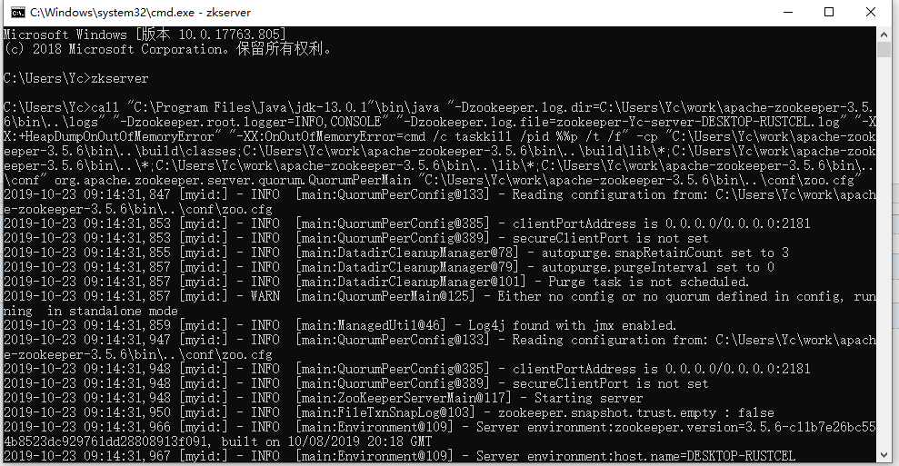
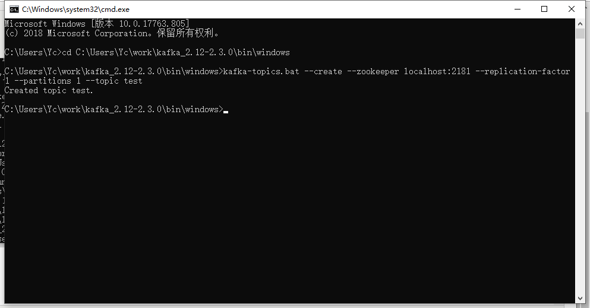
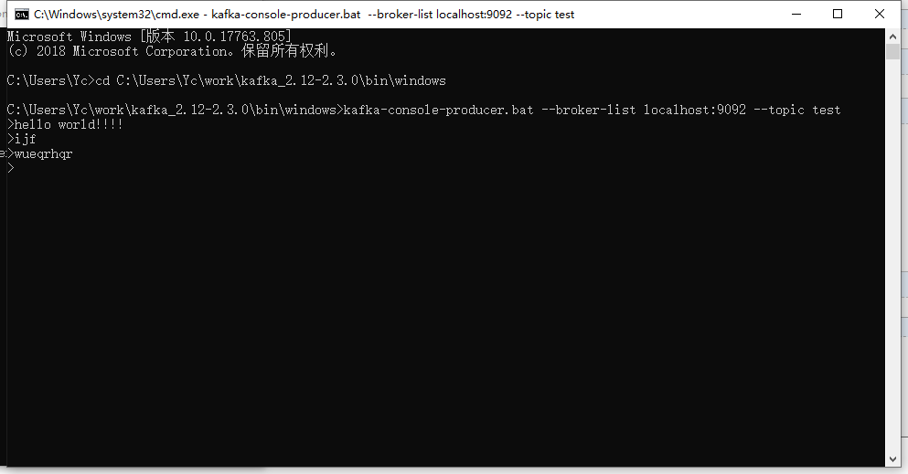
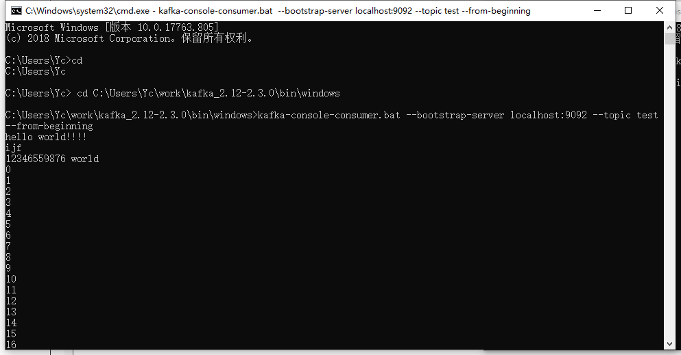
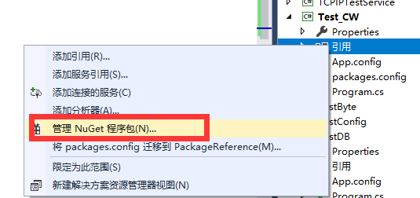
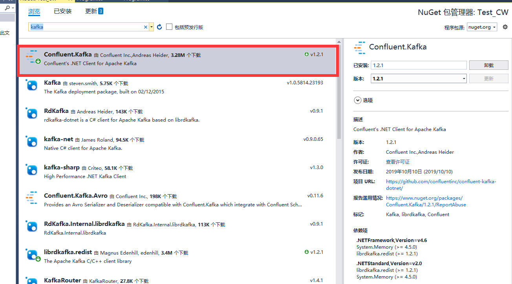

一、kafka环境配置
1.jdk安装
安装文件：http://www.oracle.com/technetwork/java/javase/downloads/index.html 下载JDK
安装完成后需要添加以下的环境变量（右键点击“我的电脑” -> "高级系统设置" -> "环境变量" ）：
JAVA_HOME: C:\Program Files\Java\jdk-13.0.1(jdk的安装路径)
Path: 现有值后追加 "%JAVA_HOME%\bin"


2.zookeeper安装
Kafka的运行依赖于Zookeeper，所以在运行Kafka之前我们需要安装并运行Zookeeper
下载安装文件： http://zookeeper.apache.org/releases.html
解压文件 apache-zookeeper-3.5.6-bin.tar
ZOOKEEPER_HOME: C:\Users\Yc\work\apache-zookeeper-3.5.6 (zookeeper目录)
Path: 在现有的值后面添加 ";%ZOOKEEPER_HOME%\bin;"
运行Zookeeper: 打开cmd然后执行 zkserver

3.安装并运行kafka
4.创建Topics
cmd执行命令：cd C:\Users\Yc\work\kafka_2.12-2.3.0\bin\windows
kafka-topics.bat --create --zookeeper localhost:2181 --replication-factor 1 --partitions 1 --topic test
执行成功后出现 :Created topic test

5.生产者使用测试
打开cmd窗口执行命令：cd C:\Users\Yc\work\kafka_2.12-2.3.0\bin\windows
kafka-console-producer.bat --broker-list localhost:9092 --topic test

6.消费者使用测试
打开cmd窗口执行命令：cd C:\Users\Yc\work\kafka_2.12-2.3.0\bin\windows
kafka-console-consumer.bat --bootstrap-server localhost:9092 --topic test --from-beginning

7..net程序消费者简单使用

引入Confluent.kafka包

public static void Main(string[] args)
{
//地址及端口号
var conf = new ProducerConfig { BootstrapServers = "localhost:9092" };
Action<DeliveryReport<Null, string>> handler = r =>
Console.WriteLine(!r.Error.IsError
? $"Delivered message to {r.TopicPartitionOffset}"
: $"Delivery Error: {r.Error.Reason}");
using (var p = new ProducerBuilder<Null, string>(conf).Build())
{
//for (int i = 0; i < 100; ++i)
//{
p.Produce("test", new Message<Null, string> { Value = "messagehowsf"}, handler);//kafka协议数据发送
//}
// wait for up to 10 seconds for any inflight messages to be delivered.
p.Flush(TimeSpan.FromSeconds(10));
}
}